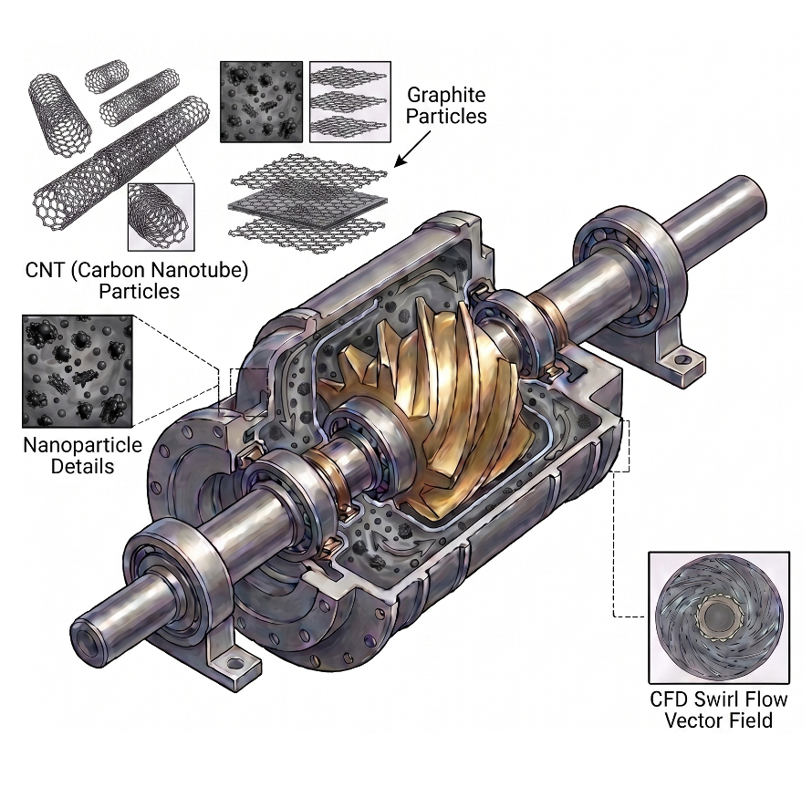

Thermal systems · Multiscale modeling
Rotating Thermo-Fluidic System Using Nanofluids
The thermal performance of a rotating thermo-fluidic system that uses GA-stabilized MWCNT nanofluids as working fluids, studied through theoretical design, experimental validation, and computational analysis.

Illustration created with AI
Overview
Three connected parts of one workflow
This project investigates the thermal performance of a rotating thermo-fluidic system using GA-stabilized MWCNT nanofluids as working fluids. The system is designed to recover thermal energy arising from viscous dissipation and thereby improve overall thermal performance.
It integrates theoretical design, experimental validation, and computational analysis as three distinct but connected components of a unified research workflow.
Theoretical framework
An energy balance that guides the design
- Developing an energy-balance framework encompassing energy conversion, viscous dissipation, and heat-transfer behavior.
- Using theoretical predictions to guide system design and operating conditions.
Experimental validation
Characterizing the working fluid and the system
- Characterizing the dispersion stability, viscosity, and thermal conductivity of GA-stabilized MWCNT nanofluids.
- Designing rotating-system experiments to evaluate thermal performance under controlled operating conditions.
Computational analysis
From molecular dispersion to rotor loads
- Running molecular dynamics simulations in LAMMPS to examine CNT aggregation and GA-mediated aggregation stabilization at the molecular scale.
- Using an LLM-assisted automated finite-element workflow to evaluate rotor loads and structural demands, with cross-validation in ANSYS.
Integrated research direction
One design framework across scales
Together, these components connect molecular dispersion, working-fluid properties, system-level thermal performance, and rotor structural integrity within a unified design framework.
More research
Convection-Driven Thermoelectric Generation in GO Nanofluids
Convection carries charged GO to the electrodes and powers a pressure sensor.
Under reviewThermo-Rheology of Graphite–MWCNT Hybrid Nanofluids
Sonication-tuned graphite/MWCNT networks for reduced viscosity and temperature-stable flow.